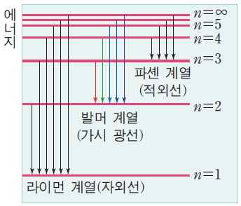

해설 2
단계 1 예시답안
| 용액번호 | 1 | 2 | 3 |
|---|---|---|---|
| 10% HCl (mL) | 5 | 10 | 15 |
| 10% NaOH (mL) | 15 | 10 | 5 |
| 중화열 | (낮다) | (높다) | (낮다) |
| pH | pH > 7 | pH = 7 | pH < 7 |
| BTB 색깔 | (파랑) | (초록) | (노랑) |
단계 2 예시답안
(1) 보어의 원자 모형: 전자는 원자핵 주위의 특정한 에너지 준위를 지닌 몇몇 구형 궤도 (전자껍질) 를 따라 움직이며, 전자껍질 간의 에너지 차에 해당하는 에너지를 흡수하거나 방출하는 경우 전자는 다른 전자껍질로 이동 가능하다. 전자의 에너지 준위와 주양자수와의 관계는 다음과 같다 (비례상수 밝힐 필요 없음):
\[E_n = -\frac{1312}{n^2} \text{ (kJ/mol)}\]
(2) 수소의 방출 스펙트럼은 주양자수에 따른 에너지 준위의 차이에 따라 불연속적인 스펙트럼의 모양을 나타내며, 바닥상태에 해당하는 주양자수에 따라 라이먼 계열, 발머 계열, 파센 계열 (구체적 명칭은 언급하지 않아도 감점 없음) 등이 자외선, 가시광선, 적외선 영역에 분리되어 관찰됨.

단계 3 예시답안
라울의 법칙: 묽은 용액의 증기압은 순수한 용매의 증기압 보다 감소하게 되는데, 용액의 증기압은 순수한 용매의 증기압과 용매의 몰분율의 곱으로 나타낼 수 있다 (\(P_{\text{용액}} = X_{\text{용매}} \cdot P^\circ_{\text{용매}}\)).
끓는점 오름: 용액의 증기압은 순수한 용매에 비해 감소하고, 용액이 끓기 위해서는 증기압이 외부 압력과 같아져야 하므로 (끓는점의 정의) 결국 용액은 순수한 용매에 비해 더 높은 온도에서 끓게 된다. 묽은 용액의 끓는점 오름 (\(\Delta T_b\)) 은 용액의 몰랄농도에 비례한다.
어는점 내림: 염화칼슘은 물에 녹아 3개의 이온이 되므로 설탕물에 비해 어는점 내림 효과가 3배가 된다. 따라서 염화칼슘 용액의 어는점은 -5.7도가 될 것이다.